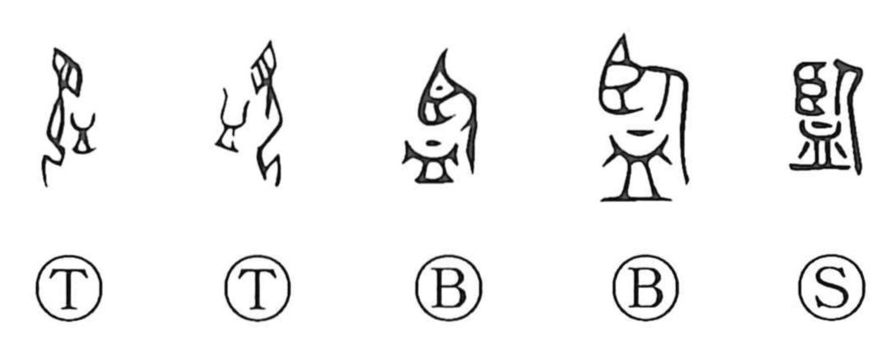

監

Kun: | On: kan
to supervise ・ to oversee ・ to inspect ・ mirror
Explanation
Shirakawa reads 監 as a compound: 臥 depicts a person with eyes cast downward, and 皿 is a round dish, here imagined as a water-filled bowl. Together they picture one gazing at their own image in a water basin—a water mirror—whence the sense “mirror.” From contemplating one’s reflection arose the idea of examining and considering, and 監 thus became the original graph for 鑑 (“mirror,” “to appraise/see”). In later compounds such as 監獄 and 監禁 it is also used in an abbreviated sense associated with confinement, evoking the notion of a “cage.”